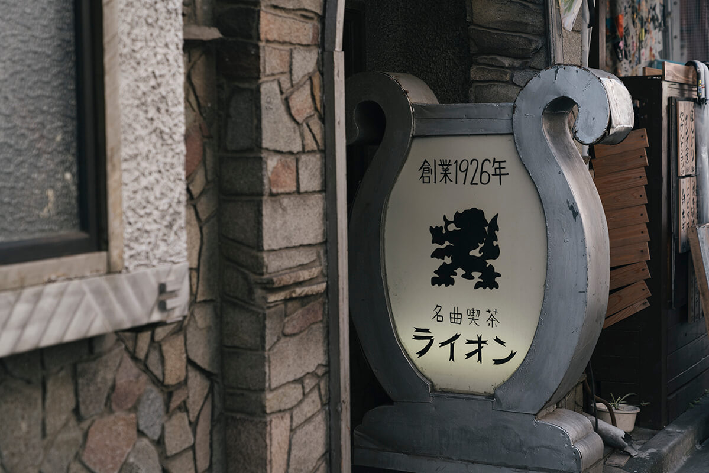
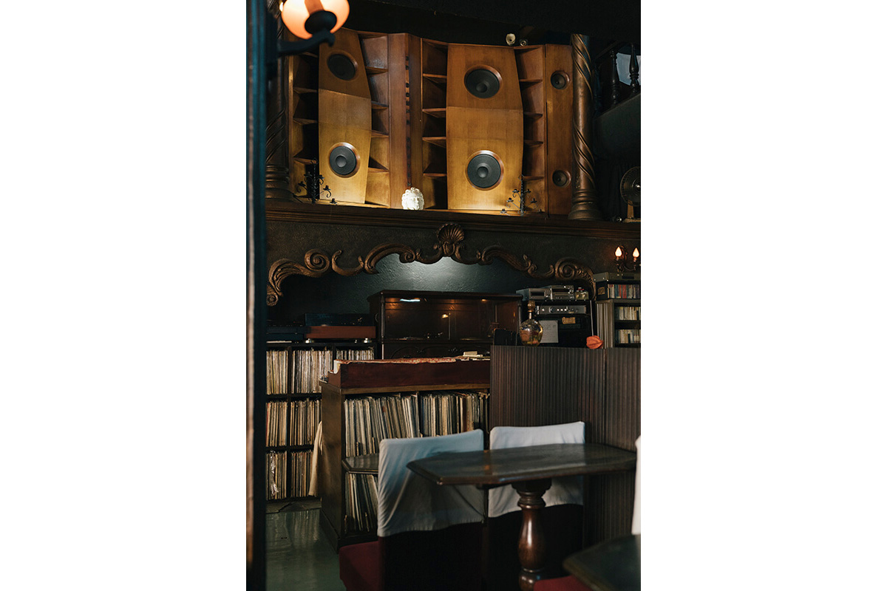
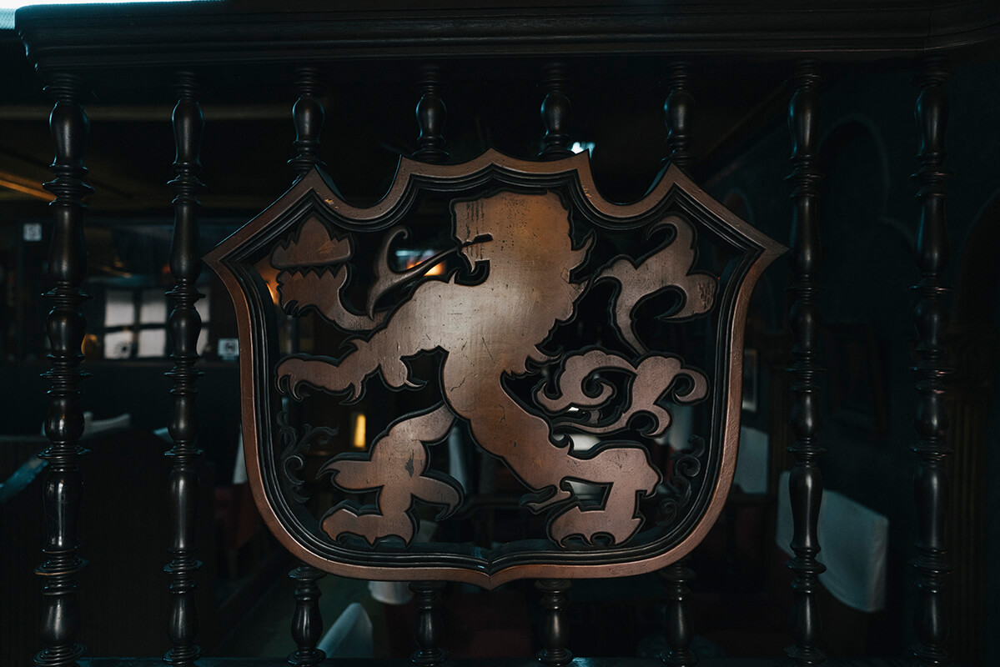
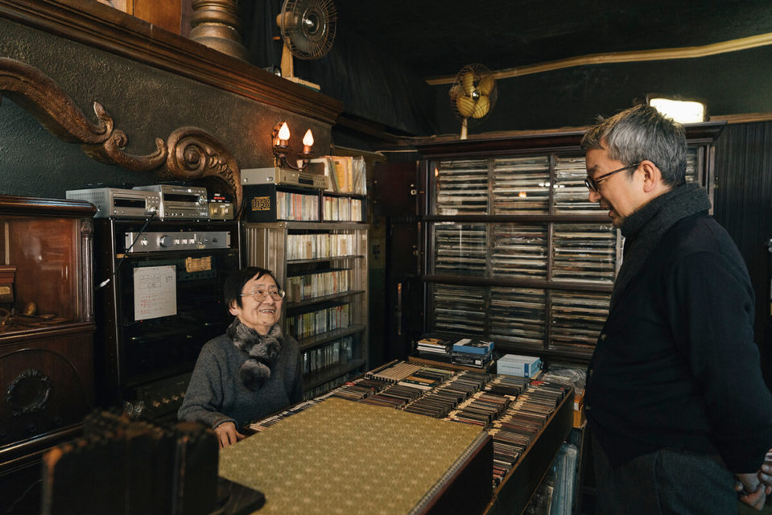
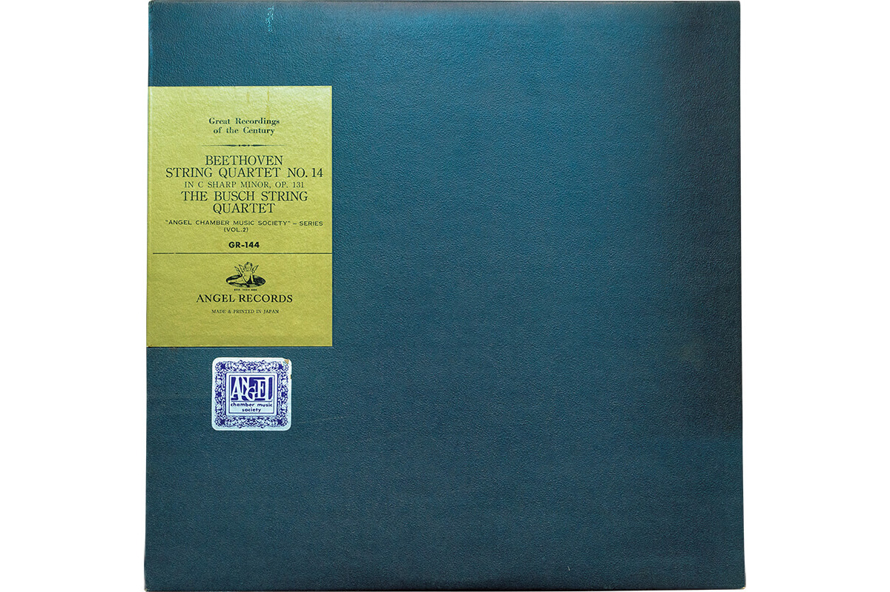

Токио · Сибуя · кафе
«Лион» в Сибуе: кафе классической музыки, где с 1926 года слушают пластинки

В переулках Сибуи с 1926 года работает кафе, куда приходят не поговорить, а слушать. Здесь нет платы за вход: заказываешь напиток и сидишь сколько хочешь перед огромными колонками.
Музыка
Классика без снобизма
Автор рубрики о знаменитых заведениях Токио полюбил классическую музыку ещё старшеклассником. Однажды по радио случайно зазвучала фортепианная пьеса Дебюсси, и ему показалось, будто он сам, музыка и время слились в одно. С тех пор он слушает почти только классику.
Многие считают такую музыку увлечением пожилых знатоков или снобов. Но немало людей хотели бы её послушать, просто не знают, с чего начать. Для них и стоит прийти в «Лион».
По-японски такие заведения называют «мэйкёку-кисса», кафе знаменитых мелодий: здесь ставят записи классики и слушают их в тишине.
Зал
Церковь для музыки на Догэндзаке
Догэндзака это улица на склоне холма в Сибуе. Кафе прячется ещё дальше, если подняться по ней, в одном из самых колоритных уголков района. Его открыли в 1926 году. Ретро-фасад удивляет уже снаружи, а внутри многих поражает полутёмный зал, будто из рассказов Рампо Эдогавы (1894–1965), классика японского детектива.

Здесь резные колонны и стены, в центре зала высится огромная четырёхканальная акустическая система, сделанная на заказ, а ряды кресел развёрнуты к колонкам. «Лион» похож на церковь, где молятся классической музыке.

«Основатель был сыном владельца сакэварни в Айдзу-Вакамацу и большим любителем всего красивого. Интерьер и дизайн здания он придумал и сделал сам, такой уж был дотошный человек»
управляющая кафе
Так рассказывает управляющая, третья по счёту в истории кафе: в 2020 году ей было 85 лет. Больше всего гостей было с середины 1950-х до середины 1970-х годов. Тогда все три этажа здания заполнялись каждый день, и персонал едва успевал обслуживать. Есть постоянные гости, которые приходят почти каждый день уже около 40 лет.

Как здесь всё устроено
Программа в 15:00 и 19:00
Как работает такое кафе? В «Лионе» каждый день в 15:00 и 19:00 звучит программа: заранее выбранные произведения, которые меняются каждый месяц. В остальное время звучат записи по заказу гостей.
Платы за вход нет: достаточно заказать напиток, и можно слушать музыку сколько угодно. Громко разговаривать нельзя, ведь сюда приходят ради музыки, но за дальними столиками, подальше от колонок, можно даже обсуждать дела. У некоторых мест есть розетки, и кто-то работает за ноутбуком. Правила здесь мягче, чем кажется, поэтому бояться первого визита не нужно.

Автор рубрики заказал крепкий кофе, сваренный по английскому рецепту, и попросил поставить струнный квартет Бетховена. Тихий зал, лучший звук и любимая музыка: трудно придумать большую роскошь.
«Лион», кафе классической музыки
- Адрес
- Токио, Сибуя, Догэндзака, 2-19-13
- Телефон
- +81 3-3461-6858
- Часы работы
- 11:00–22:30 (последний заказ в 22:20)
- Выходные
- без выходных
Фото: Ацуси Ямахира.